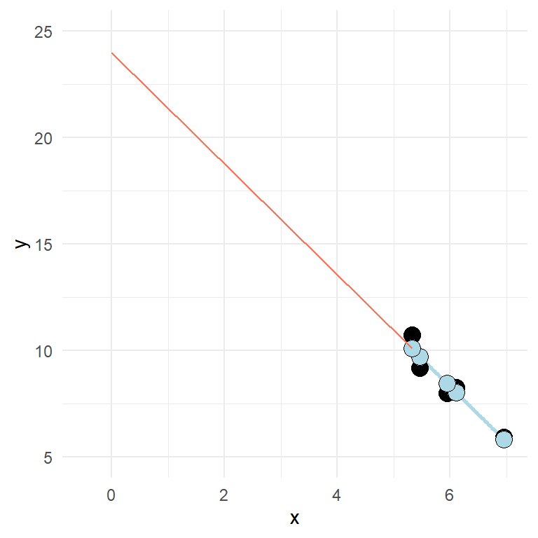

Chapter 12 Fitting regression models in R
The data above can be fitted in R using the lm() function. We get far by specifying a formula and data where the variables used in the formula are stored. We can store a model as an object and inspect the results by using the summary() function.
df <- data.frame(x = c(5.461851, 6.110910, 6.952707, 5.321775, 5.951849),
y = c(9.168992, 8.273749, 5.926797, 10.745583, 7.999151))
fit <- lm(y ~ x, data = df)
summary(fit)##
## Call:
## lm(formula = y ~ x, data = df)
##
## Residuals:
## 1 2 3 4 5
## -0.5561 0.2460 0.1005 0.6542 -0.4445
##
## Coefficients:
## Estimate Std. Error t value Pr(>|t|)
## (Intercept) 24.0085 2.6873 8.934 0.00296 **
## x -2.6151 0.4488 -5.827 0.01007 *
## ---
## Signif. codes: 0 '***' 0.001 '**' 0.01 '*' 0.05 '.' 0.1 ' ' 1
##
## Residual standard error: 0.5789 on 3 degrees of freedom
## Multiple R-squared: 0.9188, Adjusted R-squared: 0.8917
## F-statistic: 33.95 on 1 and 3 DF, p-value: 0.01007The summary that you get from the model above will show the value of the coefficient (estimates, standard error, t-value and a p value), we will get some information about the spread of the residuals and values that tells us the overall fit of the model.
The estimates from a summary in a two variable situation tells the value of \(y\) when x is zero and the increase in \(y\) for every unit increase in \(x\). Can you identify these from the output above?
Two-variable regression (univariate regression) is closely related to the correlation. Try out the code cor.test(df$x, df$y) and see what similarities you find between the outputs.
In the model we use in the example, the intercept is quite “far away” from the rest of the data (see figure below).

Let’s fit some real data. We might wonder if there are some characteristic that is related to VO2max. For example, do taller individuals have greater VO2max? It is always a good idea to start with a plot before we do the modeling.
library(readxl);
library(tidyverse)
library(exscidata)
data("cyclingstudy")
cyclingstudy %>%
filter(timepoint == "pre") %>%
select(subject, group, VO2.max, height.T1) %>%
ggplot(aes(height.T1, VO2.max)) + geom_point(size = 3, fill = "lightblue", shape = 21) +
labs(x = "Height (cm)",
y = expression("VO"["2max"]~(ml^-1~min^-1))) +
theme_minimal()There might be a positive relationship, what do you think? You might get a clearer picture if you use geom_smooth(method = "lm") in your ggplot command, try it out!
To quantify the relationship between Height (height.T1) and VO2max (VO2.max) we can fit a linear model. Below I store the model in an object called m1. Before we look at the results of the regression model, we should think about the data and inspect the fit to see if it matches with our assumptions. Assumptions that generally needs to be filled in order to get a valid regression model are:
Independent observations. This is an assumption about the design of the study and the data at hand. If we have observations that are related, the ordinary linear model will give us biased conclusions. As an example, if we collect data from the same participants over time we will not have independent observations and this will lead to pseudo-replication, lower standard errors and biased confidence intervals. Another way to see it is that non-independent observations will give non-independence of the residuals which is the mechanism that creates bad inference (as the residuals are used to estimate the sampling distribution of parameters).
Linear relationship. In the basic case, we expect a linear trend that can be described with a straight line. If the relationship is curve-linear, we may adjust the fit using e.g. polynomials.
Normal residuals. This condition might be violated when there is an outlier.
Constant variance. This assumption says that we want to be equally wrong all along the explanatory variable. If we predict \(y\) with greater error at large \(x\) we have heteroscedasticity (unequal variance), if we are “equally wrong” we have homoscedasticity (equal variance).
12.0.1 Code for fitting a preliminary model
library(tidyverse)
cyc_select <- cyclingstudy %>%
filter(timepoint == "pre") %>%
select(subject, group, VO2.max, height.T1)
m1 <- lm(VO2.max ~ height.T1, data = cyc_select)12.1 Linear relationship
The plot can be used to see if the relationship is generally linear. We do not have that many data points, but a curve-linear relationship is not evident.
12.2 Constant variance
This assumption can be checked by creating a residual plot. We will do it here by hand to see how it works. The model is fitted and stored in the object m1. From this object we can use the residuals() function to get every residual. We can add this data to the data set by creating a new variable called resid.
cyc_select$resid <- residuals(m1)
cyc_select$fitted <- fitted(m1)It is common practice to plot the residuals against the fitted values.
library(tidyverse)
cyc_select %>%
ggplot(aes(fitted, resid)) +
geom_hline(yintercept = 0) +
geom_point(size = 3, fill = "lightblue", shape = 21) +
theme_minimal()Sometimes you will see standardized residuals. This is the residual divided by the standard deviation of the residual. We can create this standardization like this:
cyc_select %>%
mutate(st.resid = resid/sd(resid)) %>%
ggplot(aes(fitted, st.resid)) +
geom_hline(yintercept = 0) +
geom_point(size = 3, fill = "lightblue", shape = 21) +
theme_minimal()Looking at the plot tells us that observation with the largest error is about 2.5 standard deviation away from its predicted value. We are suffering a bit from having a small amount of data here. But the residual plot does not invalidate the regression.
12.3 Normal residuals
To check if the residuals are normal, we can create a plot that plot every observed residual against its theoretical position in a normal distribution. This is a quantile-quantile plot. The show the concept we may sample data from a normal distribution and plot it against the theoretical qunatile.
set.seed(1)
ggplot(data.frame(y = rnorm(100, 0, 1)), aes(sample = y)) + stat_qq(size = 3, fill = "lightblue", shape = 21) + stat_qq_line() + theme_minimal()The code above samples 100 observations. They are plotted against their “theoretical values.” If the values (points) follows the straight line, we have data that follows a normal distribution. The same can be tested from our fit.
cyc_select %>%
mutate(st.resid = resid/sd(resid)) %>%
ggplot(aes(sample = st.resid)) +
stat_qq(size = 3, fill = "lightblue", shape = 21) +
stat_qq_line() +
theme_minimal()The resulting plot looks nice. Except from one or two observation, we have normally distributed values.
12.4 Independent observations
This is an assumption about the data and design of the study. We created the model based on values only from the pre-training test. If we would have used all observations (all time-points) we would have violated the assumption.